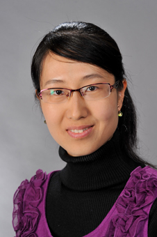
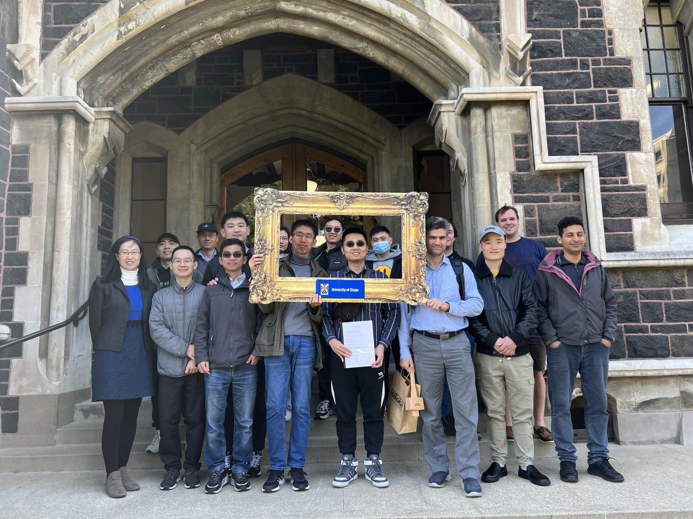
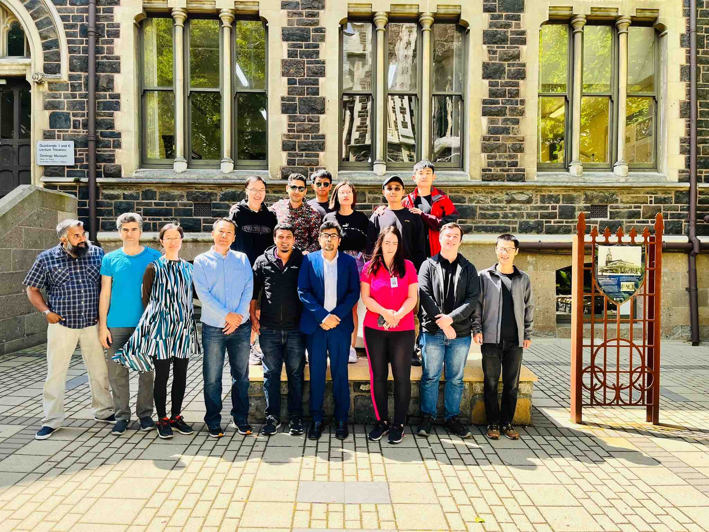
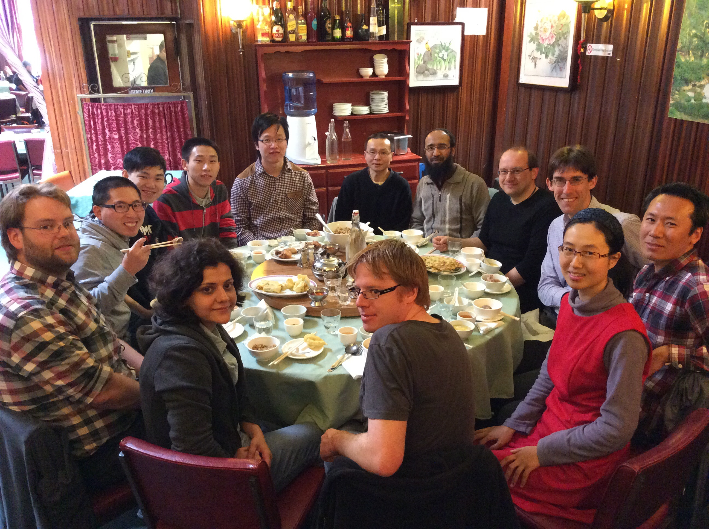

School of Systems and Computing
The University of New South Wales, UNSW Canberra
UNSW Email: wendy.chen1@unsw.edu.auPrevious Otago University email: yawen.chen@otago.ac.nz

I received a Marsden Research Grant assessed by the Mathematical and Information Sciences panel from the Royal Society of New Zealand as the principal investigator in 2016, which is the most prestigious and competitive research fund in New Zealand (successful rate 10%). This project funding success was mentioned in the NZ News (No. 9).
I am co-leading the Computer System/Network Research Group collaborated with other staff at Australian National University and Otago University. My research interests include
AI Acceleration with Photonic Computing and Communication (AI accelerators, Optimization, Chiplet)
Resource Optimization in Computer Systems/Networks/Architectures
Parallel and Distributed Computing (IoT, parallel model, multicore computers)
Wired/Wireless Networks (Optical Network-on-Chips, Sensor Networks, Data Center Networks)
High Performance Computing (Optical Computing/ Communication, Green/Cloud Computing)
Energy-related Research (Energy-efficient Design/Energy Modeling)
Graph Theory and its Applications (Geometric Embedding)
| Name | Level of Study | Research Title / Representative publications | Supervision Type |
|---|---|---|---|
| Hao Zhang | PhD (2020-) | On-chip photonics on multicore systems Parallel Computing, ICPP 2023 |
Principal Supervisor |
| Chenpeng Xia | PhD (2021-) | Photonic computing and communication for neural network accelerators ACM Transactions on Embedded Computing Systems |
Principal Supervisor |
| Fei Gao | PhD (2022-) | Efficient neural network accelerators with optical computing The Journal of Supercomputing, Optical Switching and Networking |
Principal Supervisor |
| Name | Level of Study | Representative publications | Supervision Type |
|---|---|---|---|
| Abbas Arghavani | PhD | IEEE Transactions on Mobile Computing, ACM Transactions on Embedded Computing Systems | Co-Supervisor |
| Wen Yang | PhD | IEEE Transactions on Computer-Aided Design of Integrated Circuits and Systems | Principal Supervisor |
| Feiyang Liu | PhD | IEEE Transactions on Sustainable Computing, INFOCOM | Co-Supervisor |
| Waqas Ahmad | PhD (2018-2023) | IEEE Transactions on Mobile Computing, ICC | Co-Supervisor |
| Fei Dai | PhD (2019-2023) | PPoPP 2023, ICC 2023, ICPP 2023 | Principal Supervisor |


Systems Research Group Farewell to Xiaoxin and Welcome to Xuanzhang
